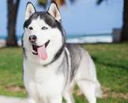
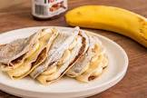

SOBRE MÍ
Me encanta la navidad, es mi época favorita en el año porque aparte de ser preciosa disfrutas con tu familia. Me gustaría en un futuro dedicarme a la biología ya que es lo que más me apasiona.

En esta paǵina web vas a conocerme un poco mś y ver mis intereses
Me encanta la navidad, es mi época favorita en el año porque aparte de ser preciosa disfrutas con tu familia. Me gustaría en un futuro dedicarme a la biología ya que es lo que más me apasiona.
Ahora os voy a enseñar algunas de las fotos que tengo en galería
 